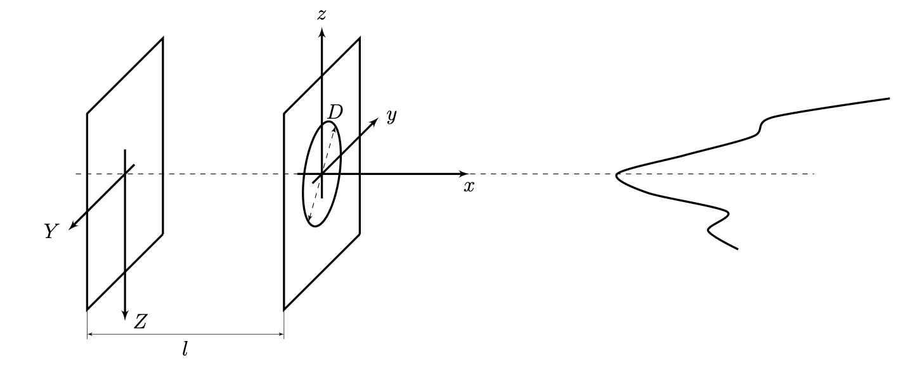
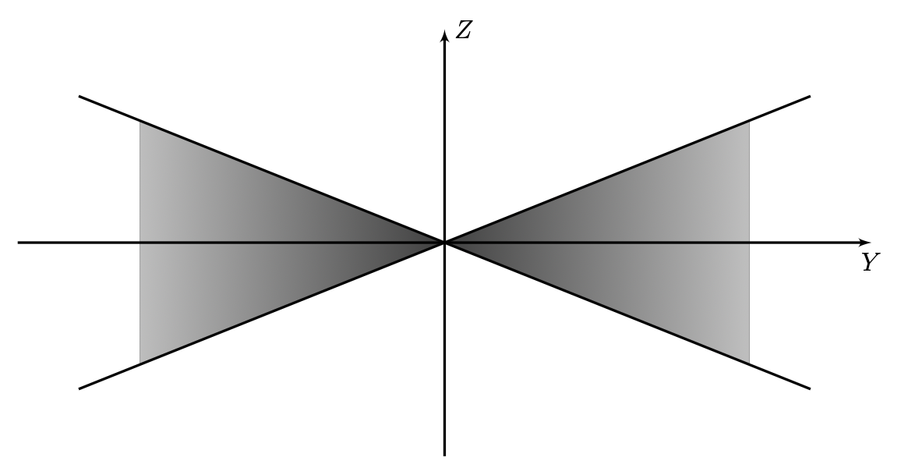
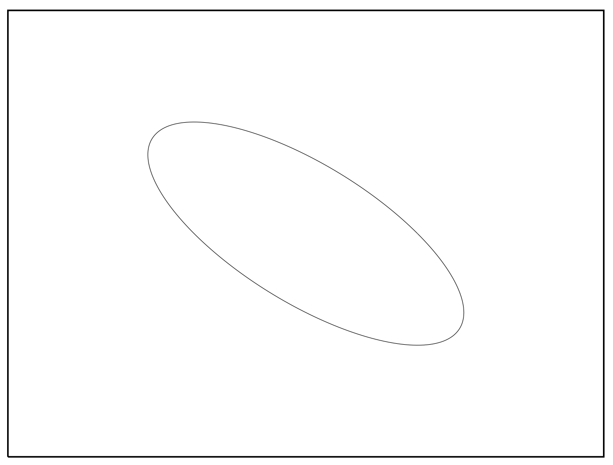
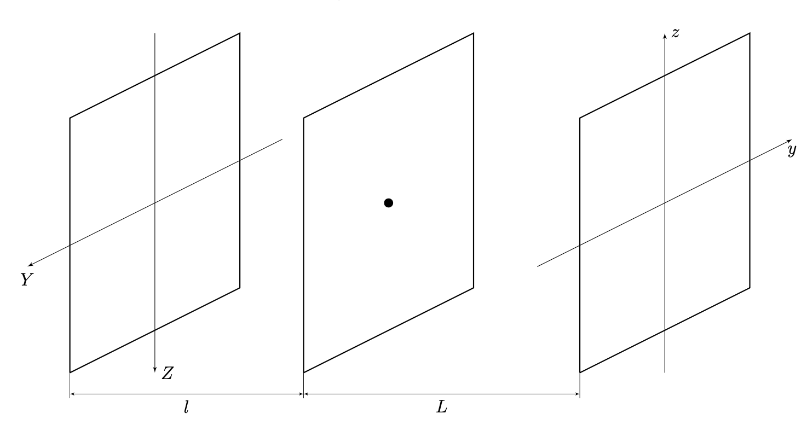
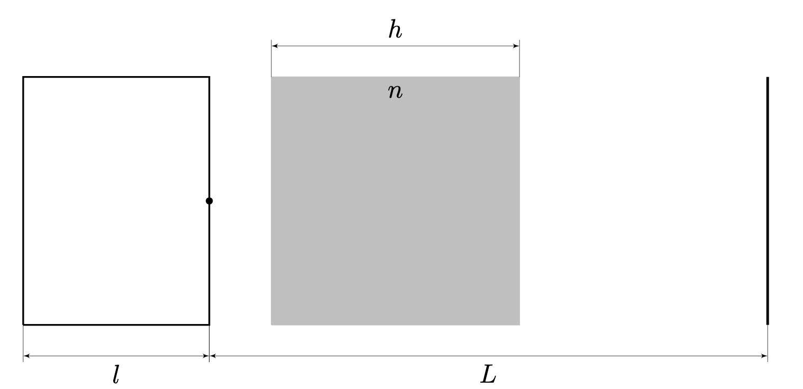

Fig. 5.
X26 (2026) — English translation
This task consists of three independent parts, united by a common theme: each of them is devoted to a specific problem that can be encountered when photographing. Try to understand the physics behind these effects and answer the questions posed.
The picture shows a camera photographing a thin wire. It consists of two planes: the front plane contains an ideal thin converging round lens with focal length $f$ and diameter $D$, the rear plane is a screen. Distance between planes $l$. A photograph is an inverted image obtained on the screen, so we introduce coordinate systems as indicated in the figure: $xyz$ describes the position of the object in space, and $YZ$ – the position of the image in the photograph.

The image of a thin wire obtained by this camera is limited from above and below by straight lines $Z = \pm kY$, where $k > 0$ and is not limited in both directions along the axis $Y$.

When photographing fast-moving objects, image distortion may occur due to the non-simultaneous reading of different parts of the photograph. This effect is called time parallax or rolling shutter. Typically, reading occurs line by line. We will assume that in our camera the image is recorded starting from the top, all lines are taken in the same and extremely short time, so there is no need to take into account the distortion of individual lines. It is known that the total time taken to photograph is 10 ms. Using a vertically downward camera, we photographed a puck with a diameter of 7.62 cm sliding on a smooth horizontal surface.

Consider photographing a flat screen. Let's enter the coordinates on the screen and in the photograph $(y,z)$ and $(Y,Z)$ respectively. For realistic transmission of images on the screen, it is necessary that the linear magnification coefficient be constant throughout the photograph, that is: \[ \vec{R} = \alpha \vec r,\quad\text{where:}\quad \vec r = (y,z);\quad \vec R = (Y,Z). \] Let's consider the simplest camera obscura. It consists of two parallel screens, one of which has a small hole. Light passing through this hole forms an image on the second screen. The image of any point in space will be located at the intersection of the ray coming from this point through the hole and the screen. We denote the distance between the photographic plane and the hole as $l$, and the distance between the camera and the screen being photographed as $L$.

In most cases, the linearity property is violated and a distortion effect is observed, that is, the magnification is different at different points in the photograph. Let's consider the third-order distortion of paraxial rays: \[ \vec R = f(r) \vec r \approx \alpha \vec r + \beta r^2 \vec r. \]
Draw a high-quality view of the photograph of part of the notebook sheet shown in the figure below, in the cases $\beta > 0$ (positive distortion) and $\beta < 0$ (negative distortion). Consider $\alpha > 0$.
Let's look at the camera obscura again. Let this time between the camera and the screen there be a flat aquarium of thickness $h$, filled with a liquid with a refractive index $n$. The remaining space is filled with air with a refractive index $n_0 = 1$.

Source: https://pho.rs/p/4802